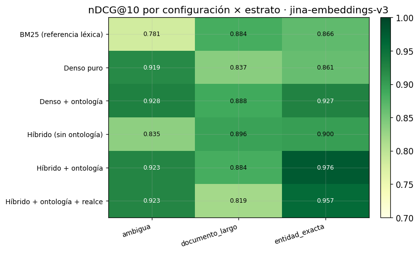
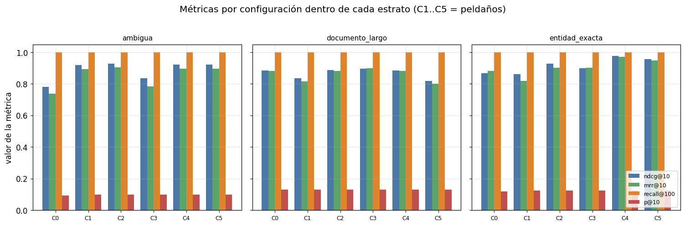
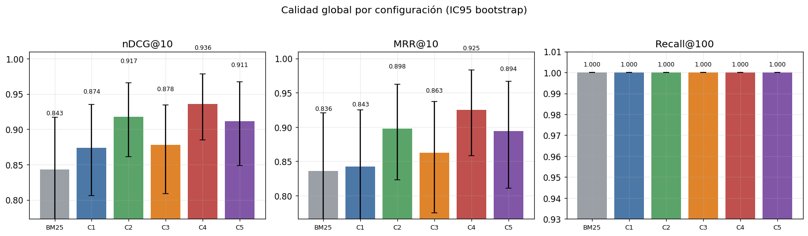
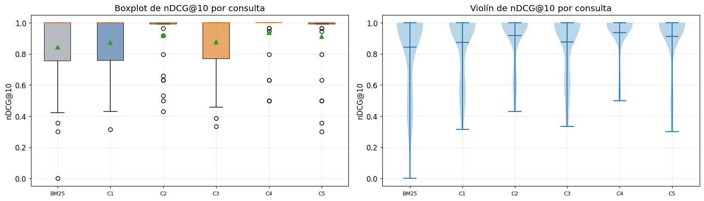
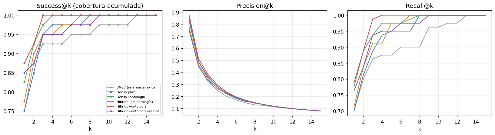
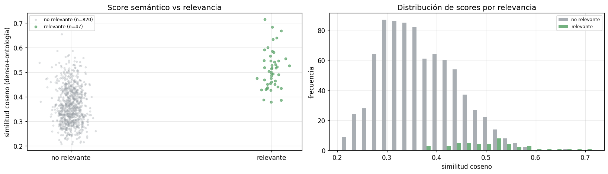

01 · Análisis por estratos y significancia estadística#
Proyecto: Buscador semántico híbrido para reportes (GovTech / SUID). Alcance de este notebook: desglose completo de la calidad de recuperación por estrato de consulta y las pruebas estadísticas pareadas que sostienen (o no) las conclusiones de la escalera de ablación.
1. Contexto y objetivos#
La escalera de ablación (notebook Benchmark_Escalera_Ablacion.ipynb) mostró que la mejor
configuración global es Híbrido + ontología (nDCG@10 = 0.936). Una media global, sin
embargo, puede ocultar comportamientos opuestos por tipo de consulta. Aquí:
Desglosamos nDCG@10, MRR@10, Recall@100 y P@10 por los cuatro estratos (entidad_exacta, ambigua, documento_largo, competencias), comparando las seis configuraciones dentro de cada uno (punto 1 de la entrega).
Ejecutamos la prueba de Wilcoxon pareada entre Config 4 (Híbrido + ontología) y Config 3 (Híbrido sin ontología), con tamaño del efecto (Cliff’s δ) e intervalos de confianza bootstrap, con énfasis en entidad_exacta (punto 3).
Marco de evaluación (recordatorio honesto). Es recuperación de información, no aprendizaje supervisado: el modelo denso está congelado (solo inferencia), no hay partición train/test, y las consultas siguen el protocolo known-item (una consulta apunta a un reporte objetivo conocido). El valor absoluto de las métricas no es precisión de producción; la evidencia está en la comparación relativa entre configuraciones.
2. Preparación, datos y núcleo de recuperación#
Núcleo de recuperación (idéntico en todos los notebooks de la entrega)#
Para que cada notebook sea autónomo y reproducible, se define aquí todo el código de recuperación y evaluación: librerías, carga de datos, métricas, índices (BM25 y denso), fusión RRF, detector de entidades, el motor de las cinco configuraciones y la estadística. No se importa nada de experimentos/lib.
# --- Librerías y utilidades base ---
import json, sys, time, math, re, unicodedata, warnings
from collections import Counter
from pathlib import Path
import numpy as np
import pandas as pd
import matplotlib.pyplot as plt
import yaml
from scipy import stats as sp_stats
warnings.filterwarnings("ignore")
pd.set_option("display.float_format", lambda x: f"{x:.3f}")
plt.rcParams.update({"figure.dpi": 110, "font.size": 11, "axes.grid": True, "grid.alpha": 0.25})
# Localiza la raíz del proyecto y la carpeta de datos del experimento.
RAIZ = Path.cwd()
if RAIZ.name == "notebooks":
RAIZ = RAIZ.parent
EXP = RAIZ / "experimentos"
cfg = yaml.safe_load((EXP / "config.yaml").read_text(encoding="utf-8"))
SEMILLA = cfg["evaluacion"]["semilla"]
np.random.seed(SEMILLA)
print("Encoder:", cfg["encoder"]["tipo"], "→", cfg["encoder"]["modelo_st"])
print("BM25:", cfg["bm25"], "| RRF k =", cfg["fusion"]["k_rrf"], "| realce λ =", cfg["realce"]["lambda"])
Encoder: sentence-transformer → jinaai/jina-embeddings-v3
BM25: {'k1': 1.5, 'b': 0.75} | RRF k = 60 | realce λ = 0.2
# --- Carga de datos ya construidos por el pipeline reproducible (make all) ---
# El corpus lo produce experimentos/preprocess_corpus.py; las consultas y juicios,
# experimentos/generar_consultas.py (protocolo known-item). Aquí solo se leen.
def cargar_jsonl(ruta):
return [json.loads(l) for l in Path(ruta).read_text(encoding="utf-8").splitlines() if l.strip()]
docs = cargar_jsonl(EXP / cfg["rutas"]["corpus"])
consultas = cargar_jsonl(EXP / cfg["rutas"]["consultas"])
qrels = {r["id"]: r["relevancia"] for r in cargar_jsonl(EXP / cfg["rutas"]["qrels"])}
ontologia = yaml.safe_load((EXP / cfg["rutas"]["ontologia"]).read_text(encoding="utf-8"))
tiene_gold = lambda q: any(g > 0 for g in q.values())
con_gold = [c for c in consultas if tiene_gold(qrels.get(c["id"], {}))]
estratos = sorted({c["estrato"] for c in consultas})
print(f"{len(docs)} documentos | {len(consultas)} consultas | {len(con_gold)} con gold")
print("Estratos:", {e: sum(1 for c in consultas if c['estrato']==e) for e in estratos})
17 documentos | 51 consultas | 40 con gold
Estratos: {'ambigua': 13, 'competencias': 11, 'documento_largo': 10, 'entidad_exacta': 17}
# --- Métricas de recuperación (nDCG, Recall, MRR, P@k, AP) con ganancia exponencial ---
def _grado(qrel, doc): return float(qrel.get(doc, 0.0))
def dcg(ranking, qrel, k):
return sum((2.0**_grado(qrel, d) - 1.0) / math.log2(i + 1)
for i, d in enumerate(ranking[:k], 1) if _grado(qrel, d) > 0)
def ndcg(ranking, qrel, k):
ideal = sorted((g for g in qrel.values() if g > 0), reverse=True)
idcg = sum((2.0**g - 1.0) / math.log2(i + 1) for i, g in enumerate(ideal[:k], 1))
return 0.0 if idcg == 0 else dcg(ranking, qrel, k) / idcg
def recall(ranking, qrel, k):
rel = {d for d, g in qrel.items() if g > 0}
return 0.0 if not rel else sum(1 for d in ranking[:k] if d in rel) / len(rel)
def mrr(ranking, qrel, k):
for i, d in enumerate(ranking[:k], 1):
if _grado(qrel, d) > 0: return 1.0 / i
return 0.0
def precision(ranking, qrel, k):
return 0.0 if k == 0 else sum(1 for d in ranking[:k] if _grado(qrel, d) > 0) / k
def average_precision(ranking, qrel, k):
rel = {d for d, g in qrel.items() if g > 0}
if not rel: return 0.0
ac, s = 0, 0.0
for i, d in enumerate(ranking[:k], 1):
if d in rel: ac += 1; s += ac / i
return s / min(len(rel), k)
def metricas_consulta(rank, qrel):
return {"ndcg@10": ndcg(rank, qrel, 10), "mrr@10": mrr(rank, qrel, 10),
"recall@100": recall(rank, qrel, 100), "p@10": precision(rank, qrel, 10),
"ap@100": average_precision(rank, qrel, 100)}
# auto-test mínimo
assert ndcg(["a","b"], {"a":1.0}, 10) == 1.0 and mrr(["b","a"], {"a":1.0}, 10) == 0.5
print("Métricas listas (auto-test OK).")
Métricas listas (auto-test OK).
# --- Núcleo de recuperación: BM25, codificador denso, RRF, detector y motor ---
_STOP = {"el","la","los","las","un","una","unos","unas","de","del","a","ante","con","en","para",
"por","que","y","o","u","se","su","sus","lo","al","es","son","como","mas","pero","sin",
"sobre","entre","cada","ya","cuando","donde","cual","quien","cuanto","muy","este","esta","estos"}
def tokenizar_es(texto):
"Minúsculas, sin tildes, sin puntuación ni stopwords."
texto = unicodedata.normalize("NFKD", texto.lower())
texto = "".join(c for c in texto if not unicodedata.combining(c))
return [t for t in re.findall(r"[a-z0-9]+", texto) if t not in _STOP and len(t) > 1]
class BM25Index:
"BM25 clásico desde cero, con analizador en español."
def __init__(self, k1=1.5, b=0.75): self.k1, self.b = k1, b
def indexar(self, ids, textos):
self._ids = list(ids); self._tf = [Counter(tokenizar_es(t)) for t in textos]
self._len = [sum(c.values()) for c in self._tf]
self._avg = (sum(self._len)/len(self._len)) if self._len else 0.0
df = Counter()
for c in self._tf: df.update(c.keys())
n = len(self._tf); self._idf = {t: math.log(1+(n-d+0.5)/(d+0.5)) for t, d in df.items()}
return self
def buscar(self, q):
qt = tokenizar_es(q); s = np.zeros(len(self._ids))
for i, tf in enumerate(self._tf):
acc = 0.0
for t in qt:
if t in tf:
f = tf[t]; den = f + self.k1*(1-self.b+self.b*self._len[i]/(self._avg or 1))
acc += self._idf.get(t, 0.0)*f*(self.k1+1)/den
s[i] = acc
return [(self._ids[i], float(s[i])) for i in np.argsort(-s)]
def _l2(m):
n = np.linalg.norm(m, axis=1, keepdims=True); n[n == 0] = 1.0
return m / n
class SentenceTransformerEncoder:
"Codificador denso real (jina-embeddings-v3), congelado; solo inferencia."
def __init__(self, modelo, truncar_dim=None):
from transformers import PreTrainedModel
if not hasattr(PreTrainedModel, "all_tied_weights_keys"):
PreTrainedModel.all_tied_weights_keys = {} # shim compat. transformers 5.x
from sentence_transformers import SentenceTransformer
self._m = SentenceTransformer(modelo, trust_remote_code=True)
self._tr = truncar_dim
self.nombre = modelo.split("/")[-1] + (f"-mrl{truncar_dim}" if truncar_dim else "")
self.dim = truncar_dim or self._m.get_sentence_embedding_dimension()
def encode(self, textos):
v = self._m.encode(list(textos), convert_to_numpy=True, normalize_embeddings=False).astype(np.float32)
if self._tr: v = v[:, :self._tr]
return _l2(v)
class LSAEncoder:
"Fallback offline determinista (TF-IDF + SVD) si el modelo real no está disponible."
def __init__(self, n_comp=128, semilla=42):
from sklearn.feature_extraction.text import TfidfVectorizer
self.nombre = f"lsa-{n_comp}"; self._nc = n_comp; self._sem = semilla; self.dim = n_comp
self._tfidf = TfidfVectorizer(analyzer="word", ngram_range=(1,2), min_df=1,
sublinear_tf=True, strip_accents="unicode", lowercase=True)
self._svd = None
def fit(self, textos):
from sklearn.decomposition import TruncatedSVD
X = self._tfidf.fit_transform(textos)
nc = max(min(self._nc, X.shape[1]-1, X.shape[0]-1), 2)
self._svd = TruncatedSVD(n_components=nc, random_state=self._sem).fit(X); self.dim = nc
return self
def encode(self, textos):
return _l2(self._svd.transform(self._tfidf.transform(textos)).astype(np.float32))
def construir_encoder(cfg, textos_fit):
if cfg["encoder"]["tipo"] == "sentence-transformer":
try:
enc = SentenceTransformerEncoder(cfg["encoder"]["modelo_st"])
print("Encoder real:", enc.nombre, "| dim", enc.dim); return enc
except Exception as e:
print("Modelo real no disponible (", type(e).__name__, ") → fallback LSA")
enc = LSAEncoder(cfg["encoder"]["lsa_componentes"]).fit(textos_fit)
print("Encoder LSA:", enc.nombre, "| dim", enc.dim); return enc
class DenseIndex:
"Índice denso por coseno (producto interno sobre vectores normalizados)."
def __init__(self, encoder): self.encoder = encoder
def indexar(self, ids, textos):
self._ids = list(ids); self._mat = self.encoder.encode(textos); return self
def buscar(self, q):
qv = self.encoder.encode([q])[0]; s = self._mat @ qv
return [(self._ids[i], float(s[i])) for i in np.argsort(-s)]
def _norm(s):
s = unicodedata.normalize("NFKD", s.lower())
return "".join(c for c in s if not unicodedata.combining(c))
def rrf(a, b, k=60):
"Reciprocal Rank Fusion con orden y desempate deterministas por doc_id."
ra = {d: i+1 for i, (d, _) in enumerate(a)}; rb = {d: i+1 for i, (d, _) in enumerate(b)}
ds = [d for d, _ in a] + [d for d, _ in b if d not in ra]; big = len(ds)+k+1
fus = {d: 1.0/(k+ra.get(d, big)) + 1.0/(k+rb.get(d, big)) for d in ds}
return sorted(ds, key=lambda d: (-fus[d], d)), fus
class DetectorEntidades:
"Detecta clases de la ontología y nombres propios mencionados en la consulta."
def __init__(self, ontologia):
self._term = []
for clase, cuerpo in ontologia.get("clases", {}).items():
for t in [clase, *cuerpo.get("sinonimos", [])]:
self._term.append((_norm(t), clase))
self._pat = re.compile(r"\b[A-ZÁÉÍÓÚÑ][a-záéíóúñ]{2,}\b")
def clases_en(self, q):
cq = _norm(q); return {c for t, c in self._term if t and t in cq}
def tiene_nombre_propio(self, q):
toks = self._pat.findall(q)
if not toks: return False
primera = q.strip().split()[:1]
cand = [t for t in toks if not (primera and t == primera[0])]
return any(_norm(t) not in {tt for tt, _ in self._term} for t in cand)
CONFIGS = {1:"Denso puro", 2:"Denso + ontología", 3:"Híbrido (sin ontología)",
4:"Híbrido + ontología", 5:"Híbrido + ontología + realce"}
NOMBRE_BM25 = "BM25 (referencia léxica)"; CONFIG_BM25 = 0
class MotorRecuperacion:
"Construye los 6 índices una sola vez y responde cualquier configuración."
def __init__(self, docs, encoder, ontologia, k1, b, k_rrf, lambda_realce):
self.doc_ids = [d["id"] for d in docs]; self.k_rrf = k_rrf; self.lam = lambda_realce
self.det = DetectorEntidades(ontologia)
self.ent = {d["id"]: set(d["metadatos_ontologia"].get("entidades_principales", [])) for d in docs}
self.esnp = {d["id"]: bool(d.get("nombre_propio_buscable", False)) for d in docs}
desc = [d["descripcion"] for d in docs]; onto = [d["texto_indexable"] for d in docs]
self.bm_desc = BM25Index(k1, b).indexar(self.doc_ids, desc)
self.bm_onto = BM25Index(k1, b).indexar(self.doc_ids, onto)
self.dn_desc = DenseIndex(encoder).indexar(self.doc_ids, desc)
self.dn_onto = DenseIndex(encoder).indexar(self.doc_ids, onto)
def indicador(self, q, doc_id):
"1 si la consulta y el documento comparten entidad (o ambos son de nombre propio)."
if self.det.clases_en(q) & self.ent.get(doc_id, set()): return 1
if self.det.tiene_nombre_propio(q) and self.esnp.get(doc_id): return 1
return 0
def fusion_onto(self, q):
"Devuelve (orden, dict de scores RRF) del híbrido+ontología (config 4)."
return rrf(self.bm_onto.buscar(q), self.dn_onto.buscar(q), self.k_rrf)
def recuperar(self, config, q):
if config == CONFIG_BM25: return [d for d, _ in self.bm_desc.buscar(q)]
if config == 1: return [d for d, _ in self.dn_desc.buscar(q)]
if config == 2: return [d for d, _ in self.dn_onto.buscar(q)]
if config == 3: return rrf(self.bm_desc.buscar(q), self.dn_desc.buscar(q), self.k_rrf)[0]
if config == 4: return self.fusion_onto(q)[0]
if config == 5:
_, fus = self.fusion_onto(q)
final = {d: s*(1 + self.lam*self.indicador(q, d)) for d, s in fus.items()}
return sorted(final, key=lambda d: (-final[d], d))
raise ValueError(config)
textos_fit = [d["texto_indexable"] for d in docs] + [d["descripcion"] for d in docs]
encoder = construir_encoder(cfg, textos_fit)
motor = MotorRecuperacion(docs, encoder, ontologia, cfg["bm25"]["k1"], cfg["bm25"]["b"],
cfg["fusion"]["k_rrf"], cfg["realce"]["lambda"])
print("Motor construido (BM25×2, denso×2).")
Encoder real: jina-embeddings-v3 | dim 1024
Motor construido (BM25×2, denso×2).
# --- Estadística: Wilcoxon pareado y bootstrap; tamaño del efecto ---
def wilcoxon_pareado(a, b):
"Wilcoxon signed-rank pareado (a-b): p-valor y media de la diferencia."
a, b = np.asarray(a, float), np.asarray(b, float); dif = a - b
if np.allclose(dif, 0):
return {"p_valor": None, "media_dif": 0.0, "n": len(a), "nota": "diferencias nulas"}
try:
est, p = sp_stats.wilcoxon(a, b, zero_method="wilcox")
return {"estadistico": float(est), "p_valor": float(p), "media_dif": float(dif.mean()), "n": len(a)}
except ValueError as e:
return {"p_valor": None, "media_dif": float(dif.mean()), "n": len(a), "nota": str(e)}
def bootstrap_ic(vals, n=2000, alpha=0.05, semilla=SEMILLA):
"IC percentil por bootstrap para la media."
v = np.asarray(vals, float)
if len(v) == 0: return {"media": None, "ic_bajo": None, "ic_alto": None, "n": 0}
rng = np.random.default_rng(semilla)
m = np.array([rng.choice(v, size=len(v), replace=True).mean() for _ in range(n)])
return {"media": float(v.mean()), "ic_bajo": float(np.percentile(m, 100*alpha/2)),
"ic_alto": float(np.percentile(m, 100*(1-alpha/2))), "n": len(v)}
def cliffs_delta(a, b):
"Tamaño del efecto no paramétrico Cliff's delta (a vs b)."
a, b = np.asarray(a, float), np.asarray(b, float)
if len(a) == 0 or len(b) == 0: return 0.0
gt = sum((x > y) for x in a for y in b); lt = sum((x < y) for x in a for y in b)
return (gt - lt) / (len(a)*len(b))
def magnitud_cliff(d):
ad = abs(d)
return ("insignificante" if ad < 0.147 else "pequeño" if ad < 0.33
else "mediano" if ad < 0.474 else "grande")
print("Estadística lista (Wilcoxon, bootstrap, Cliff's delta).")
Estadística lista (Wilcoxon, bootstrap, Cliff's delta).
3. Ejecución de las seis configuraciones#
Descripción técnica. Para cada configuración y cada consulta se calcula el ranking y las métricas por consulta (solo en las que tienen documento relevante en la v1). Guardamos los valores por consulta para poder agregarlos por estrato y correr pruebas pareadas.
configuraciones = [(CONFIG_BM25, NOMBRE_BM25)] + list(CONFIGS.items())
orden_cfg = [n for _, n in configuraciones]
METRICAS = ["ndcg@10", "mrr@10", "recall@100", "p@10", "ap@100"]
por_consulta, latencias = {}, {}
for num, nombre in configuraciones:
por_consulta[nombre], latencias[nombre] = {}, []
for c in consultas:
t0 = time.perf_counter()
rank = motor.recuperar(num, c["texto"])
latencias[nombre].append((time.perf_counter() - t0) * 1000)
if tiene_gold(qrels.get(c["id"], {})):
por_consulta[nombre][c["id"]] = metricas_consulta(rank, qrels[c["id"]])
# índices de consulta por estrato (solo con gold)
ids_estrato = {e: [c["id"] for c in con_gold if c["estrato"] == e] for e in estratos}
ids_estrato = {e: v for e, v in ids_estrato.items() if v} # descarta estratos sin gold
ids_global = [c["id"] for c in con_gold]
def agrega(nombre, ids, metrica):
vals = [por_consulta[nombre][i][metrica] for i in ids if i in por_consulta[nombre]]
return float(np.mean(vals)) if vals else float("nan")
def serie(nombre, ids, metrica="ndcg@10"):
return [por_consulta[nombre][i][metrica] for i in ids if i in por_consulta[nombre]]
print("Estratos con juicios:", list(ids_estrato))
print("Estrato SIN cobertura en v1 (vacío de cobertura):",
sorted({c['estrato'] for c in consultas if not tiene_gold(qrels.get(c['id'],{}))}))
Estratos con juicios: ['ambigua', 'documento_largo', 'entidad_exacta']
Estrato SIN cobertura en v1 (vacío de cobertura): ['competencias']
4. Tablas completas de resultados por estrato#
Descripción técnica. Una tabla por estrato: filas = configuraciones, columnas = métricas. Se resalta el máximo por columna.
def tabla_estrato(ids):
df = pd.DataFrame({m: {n: agrega(n, ids, m) for n in orden_cfg} for m in
["ndcg@10","mrr@10","recall@100","p@10"]})
return df.loc[orden_cfg]
tablas = {e: tabla_estrato(ids_estrato[e]) for e in ids_estrato}
tablas["GLOBAL"] = tabla_estrato(ids_global)
for e, df in tablas.items():
print(f"\n================ Estrato: {e} ({len(ids_estrato.get(e, ids_global))} consultas) ================")
display(df.style.highlight_max(axis=0, color="#c9f0c9").format("{:.3f}"))
================ Estrato: ambigua (13 consultas) ================
| ndcg@10 | mrr@10 | recall@100 | p@10 | |
|---|---|---|---|---|
| BM25 (referencia léxica) | 0.781 | 0.739 | 1.000 | 0.092 |
| Denso puro | 0.919 | 0.894 | 1.000 | 0.100 |
| Denso + ontología | 0.928 | 0.904 | 1.000 | 0.100 |
| Híbrido (sin ontología) | 0.835 | 0.783 | 1.000 | 0.100 |
| Híbrido + ontología | 0.923 | 0.897 | 1.000 | 0.100 |
| Híbrido + ontología + realce | 0.923 | 0.897 | 1.000 | 0.100 |
================ Estrato: documento_largo (10 consultas) ================
| ndcg@10 | mrr@10 | recall@100 | p@10 | |
|---|---|---|---|---|
| BM25 (referencia léxica) | 0.884 | 0.883 | 1.000 | 0.130 |
| Denso puro | 0.837 | 0.817 | 1.000 | 0.130 |
| Denso + ontología | 0.888 | 0.883 | 1.000 | 0.130 |
| Híbrido (sin ontología) | 0.896 | 0.900 | 1.000 | 0.130 |
| Híbrido + ontología | 0.884 | 0.883 | 1.000 | 0.130 |
| Híbrido + ontología + realce | 0.819 | 0.800 | 1.000 | 0.130 |
================ Estrato: entidad_exacta (17 consultas) ================
| ndcg@10 | mrr@10 | recall@100 | p@10 | |
|---|---|---|---|---|
| BM25 (referencia léxica) | 0.866 | 0.882 | 1.000 | 0.118 |
| Denso puro | 0.861 | 0.819 | 1.000 | 0.124 |
| Denso + ontología | 0.927 | 0.902 | 1.000 | 0.124 |
| Híbrido (sin ontología) | 0.900 | 0.902 | 1.000 | 0.124 |
| Híbrido + ontología | 0.976 | 0.971 | 1.000 | 0.124 |
| Híbrido + ontología + realce | 0.957 | 0.948 | 1.000 | 0.124 |
================ Estrato: GLOBAL (40 consultas) ================
| ndcg@10 | mrr@10 | recall@100 | p@10 | |
|---|---|---|---|---|
| BM25 (referencia léxica) | 0.843 | 0.836 | 1.000 | 0.113 |
| Denso puro | 0.874 | 0.843 | 1.000 | 0.117 |
| Denso + ontología | 0.917 | 0.898 | 1.000 | 0.117 |
| Híbrido (sin ontología) | 0.878 | 0.863 | 1.000 | 0.117 |
| Híbrido + ontología | 0.936 | 0.925 | 1.000 | 0.117 |
| Híbrido + ontología + realce | 0.911 | 0.894 | 1.000 | 0.117 |
5. Visualizaciones#
5.1 Heatmap nDCG@10 (configuración × estrato)#
Interpretación de resultados. El estrato entidad_exacta es donde el híbrido+ontología despega; ambigua y documento_largo son más planos. La lectura clave es dónde cada peldaño aporta.
estr_plot = list(ids_estrato)
M = np.array([[agrega(n, ids_estrato[e], "ndcg@10") for e in estr_plot] for n in orden_cfg])
fig, ax = plt.subplots(figsize=(7.8, 4.8))
im = ax.imshow(M, cmap="YlGn", vmin=0.70, vmax=1.0, aspect="auto")
ax.set_xticks(range(len(estr_plot))); ax.set_xticklabels(estr_plot, rotation=18, ha="right", fontsize=9)
ax.set_yticks(range(len(orden_cfg))); ax.set_yticklabels(orden_cfg, fontsize=9)
for i in range(M.shape[0]):
for j in range(M.shape[1]):
ax.text(j, i, f"{M[i,j]:.3f}", ha="center", va="center", fontsize=8,
color="black" if M[i,j] < 0.9 else "white")
ax.set_title(f"nDCG@10 por configuración × estrato · {encoder.nombre}")
fig.colorbar(im, ax=ax, fraction=0.046, pad=0.04); plt.tight_layout(); plt.show()

5.2 Barras agrupadas de las cuatro métricas por estrato#
metric_plot = ["ndcg@10","mrr@10","recall@100","p@10"]
fig, axes = plt.subplots(1, len(ids_estrato), figsize=(4.6*len(ids_estrato), 4.4), sharey=True)
if len(ids_estrato) == 1: axes = [axes]
x = np.arange(len(orden_cfg)); w = 0.2
col = {"ndcg@10":"#4c78a8","mrr@10":"#5aa469","recall@100":"#e0842c","p@10":"#c0504d"}
for ax, e in zip(axes, ids_estrato):
for j, m in enumerate(metric_plot):
ax.bar(x + (j-1.5)*w, [agrega(n, ids_estrato[e], m) for n in orden_cfg], w,
label=m, color=col[m])
ax.set_title(e, fontsize=10); ax.set_xticks(x)
ax.set_xticklabels([f"C{i}" if isinstance(i,int) else "BM25" for i,_ in configuraciones], fontsize=8)
ax.set_ylim(0, 1.05); ax.grid(axis="y", alpha=0.3)
axes[0].set_ylabel("valor de la métrica"); axes[-1].legend(fontsize=8, loc="lower right")
fig.suptitle("Métricas por configuración dentro de cada estrato (C1..C5 = peldaños)", y=1.02)
plt.tight_layout(); plt.show()

6. Significancia estadística (punto 3)#
6.1 Config 4 (Híbrido + ontología) vs Config 3 (Híbrido sin ontología)#
Contexto y objetivo. ¿El aporte de la ontología sobre el híbrido es real o ruido? Se prueba con Wilcoxon signed-rank pareado sobre nDCG@10 por consulta, se reporta el tamaño del efecto (Cliff’s δ) y el IC bootstrap de la diferencia media, global y en entidad_exacta.
def comparar(nombre_a, nombre_b, ids, metrica="ndcg@10"):
a, b = serie(nombre_a, ids, metrica), serie(nombre_b, ids, metrica)
w = wilcoxon_pareado(a, b)
d = cliffs_delta(a, b)
difs = np.array(a) - np.array(b)
ic = bootstrap_ic(difs)
return {"n": w["n"], "media Δ": w["media_dif"], "p-valor": w.get("p_valor"),
"IC95 Δ": f"[{ic['ic_bajo']:+.3f}, {ic['ic_alto']:+.3f}]",
"Cliff δ": d, "magnitud": magnitud_cliff(d)}
filas = []
for ambito, ids in [("global", ids_global)] + [(e, ids_estrato[e]) for e in ids_estrato]:
r = comparar(CONFIGS[4], CONFIGS[3], ids); r = {"ámbito": ambito, **r}; filas.append(r)
df_c43 = pd.DataFrame(filas).set_index("ámbito")
print("Config 4 (Híbrido+ontología) vs Config 3 (Híbrido sin ontología) — nDCG@10")
df_c43
Config 4 (Híbrido+ontología) vs Config 3 (Híbrido sin ontología) — nDCG@10
| n | media Δ | p-valor | IC95 Δ | Cliff δ | magnitud | |
|---|---|---|---|---|---|---|
| ámbito | ||||||
| global | 40 | 0.058 | 0.040 | [+0.008, +0.114] | 0.140 | insignificante |
| ambigua | 13 | 0.088 | 0.250 | [+0.000, +0.205] | 0.166 | pequeño |
| documento_largo | 10 | -0.012 | 1.000 | [-0.124, +0.099] | -0.010 | insignificante |
| entidad_exacta | 17 | 0.076 | 0.068 | [+0.008, +0.160] | 0.194 | pequeño |
6.2 Otras comparaciones de la escalera (contexto para P1, P2, P5)#
comparaciones = [
("C3 vs BM25 (P1)", CONFIGS[3], NOMBRE_BM25),
("C3 vs C1 denso (P1,P2)", CONFIGS[3], CONFIGS[1]),
("C4 vs C3 ontología (P3)", CONFIGS[4], CONFIGS[3]),
("C5 vs C4 realce (P5)", CONFIGS[5], CONFIGS[4]),
]
ee = ids_estrato.get("entidad_exacta", ids_global)
filas = []
for etq, a, b in comparaciones:
r = comparar(a, b, ee); filas.append({"comparación (entidad_exacta)": etq, **r})
pd.DataFrame(filas).set_index("comparación (entidad_exacta)")
| n | media Δ | p-valor | IC95 Δ | Cliff δ | magnitud | |
|---|---|---|---|---|---|---|
| comparación (entidad_exacta) | ||||||
| C3 vs BM25 (P1) | 17 | 0.034 | 0.068 | [+0.004, +0.073] | 0.042 | insignificante |
| C3 vs C1 denso (P1,P2) | 17 | 0.039 | 0.917 | [-0.042, +0.146] | 0.080 | insignificante |
| C4 vs C3 ontología (P3) | 17 | 0.076 | 0.068 | [+0.008, +0.160] | 0.194 | pequeño |
| C5 vs C4 realce (P5) | 17 | -0.019 | 0.655 | [-0.123, +0.065] | -0.003 | insignificante |
5.3 Visualizaciones de diagnóstico (paquete estándar de IR)#
Gráficas habituales en evaluación de búsqueda semántica, para leer los resultados más allá de las tablas: barras de calidad con intervalo de confianza, distribución por consulta (boxplot/violín), cobertura acumulada (Success@k) con Precision@k/Recall@k, y un scatter de score semántico frente a relevancia. Los rankings se recomputan una sola vez.
# --- setup de visualizaciones ---
import numpy as _np
_orden = [n for _, n in configuraciones]
_COL = {n: c for n, c in zip(_orden, ["#9aa0a6","#4c78a8","#5aa469","#e0842c","#c0504d","#8156a7"])}
_etq = [("C%d" % i if isinstance(i, int) and i > 0 else "BM25") for i, _ in configuraciones]
_rank = {n: {c["id"]: motor.recuperar(num, c["texto"]) for c in consultas} for num, n in configuraciones}
_gold = con_gold
def _bic(vals, n=2000, seed=42):
v = _np.array(vals, float); rng = _np.random.default_rng(seed)
m = _np.array([rng.choice(v, len(v), replace=True).mean() for _ in range(n)])
return v.mean(), _np.percentile(m, 2.5), _np.percentile(m, 97.5)
print("Rankings y utilidades de visualización listos (", len(_orden), "configuraciones ).")
Rankings y utilidades de visualización listos ( 6 configuraciones ).
Barras de calidad global. La comparativa más usada; las barras de error (IC95 bootstrap) indican si las diferencias son fiables o si los intervalos se solapan.
# Barras de calidad global con IC95 bootstrap
_mets = [("nDCG@10", lambda r, q: ndcg(r, q, 10)),
("MRR@10", lambda r, q: mrr(r, q, 10)),
("Recall@100", lambda r, q: recall(r, q, 100))]
fig, axes = plt.subplots(1, 3, figsize=(15, 4.2))
for ax, (nom, fn) in zip(axes, _mets):
vals, los, his = [], [], []
for n in _orden:
s = [fn(_rank[n][c["id"]], qrels[c["id"]]) for c in _gold]
m, lo, hi = _bic(s); vals.append(m); los.append(m - lo); his.append(hi - m)
ax.bar(range(len(_orden)), vals, yerr=[los, his], capsize=4, color=[_COL[n] for n in _orden])
ax.set_xticks(range(len(_orden))); ax.set_xticklabels(_etq, fontsize=8.5); ax.set_title(nom)
ax.set_ylim(max(0, min(vals) - 0.07), 1.01)
for i, v in enumerate(vals): ax.text(i, v + max(his) + 0.003, f"{v:.3f}", ha="center", fontsize=8)
fig.suptitle("Calidad global por configuración (IC95 bootstrap)", y=1.03); plt.tight_layout(); plt.show()

Distribución por consulta. Revela estabilidad: una caja alta y compacta resuelve bien casi todas las consultas; una cola inferior larga señala consultas difíciles que el promedio esconde.
# Distribución por consulta: boxplot y violín de nDCG@10
_data = [[ndcg(_rank[n][c["id"]], qrels[c["id"]], 10) for c in _gold] for n in _orden]
fig, axes = plt.subplots(1, 2, figsize=(15, 4.4))
_bp = axes[0].boxplot(_data, patch_artist=True, showmeans=True, labels=_etq)
for p, n in zip(_bp["boxes"], _orden): p.set_facecolor(_COL[n]); p.set_alpha(0.7)
axes[0].set_title("Boxplot de nDCG@10 por consulta"); axes[0].set_ylabel("nDCG@10"); axes[0].tick_params(axis="x", labelsize=8)
axes[1].violinplot(_data, showmeans=True); axes[1].set_xticks(range(1, len(_orden) + 1))
axes[1].set_xticklabels(_etq, fontsize=8); axes[1].set_title("Violín de nDCG@10 por consulta"); axes[1].set_ylabel("nDCG@10")
plt.tight_layout(); plt.show()

Cobertura del ranking. Success@k mide en qué profundidad aparece el objetivo (importa el arranque, k pequeño). Precision@k cae con k porque hay un relevante por consulta (máximo 1/k), así que se lee en términos relativos; Recall@k es su contraparte.
# Success@k (cobertura acumulada) + Precision@k + Recall@k
_ks = list(range(1, 16))
fig, axes = plt.subplots(1, 3, figsize=(15, 4.2))
for n in _orden:
axes[0].plot(_ks, [_np.mean([1.0 if any(qrels[c["id"]].get(d, 0) > 0 for d in _rank[n][c["id"]][:k]) else 0.0 for c in _gold]) for k in _ks], color=_COL[n], marker="o", ms=3, label=n.replace(" + ", "+"))
axes[1].plot(_ks, [_np.mean([precision(_rank[n][c["id"]], qrels[c["id"]], k) for c in _gold]) for k in _ks], color=_COL[n])
axes[2].plot(_ks, [_np.mean([recall(_rank[n][c["id"]], qrels[c["id"]], k) for c in _gold]) for k in _ks], color=_COL[n])
axes[0].set_title("Success@k (cobertura acumulada)"); axes[0].set_xlabel("k"); axes[0].legend(fontsize=7, loc="lower right")
axes[1].set_title("Precision@k"); axes[1].set_xlabel("k"); axes[2].set_title("Recall@k"); axes[2].set_xlabel("k")
plt.tight_layout(); plt.show()

Score semántico vs relevancia. Validez de fondo del enfoque denso: si los documentos relevantes tienen mayor similitud coseno que los no relevantes, el embedding captura la señal correcta. El solapamiento en la zona media explica por qué la señal léxica y la ontología siguen aportando.
# Scatter: score semántico (coseno) vs relevancia
_xr, _xn = [], []
for c in consultas:
for d, sc in motor.dn_onto.buscar(c["texto"])[:20]:
(_xr if qrels.get(c["id"], {}).get(d, 0) > 0 else _xn).append(sc)
fig, axes = plt.subplots(1, 2, figsize=(15, 4.4)); _rng = _np.random.default_rng(0)
axes[0].scatter(_rng.normal(0, 0.04, len(_xn)), _xn, s=8, alpha=0.25, color="#9aa0a6", label=f"no relevante (n={len(_xn)})")
axes[0].scatter(_rng.normal(1, 0.04, len(_xr)), _xr, s=16, alpha=0.7, color="#5aa469", label=f"relevante (n={len(_xr)})")
axes[0].set_xticks([0, 1]); axes[0].set_xticklabels(["no relevante", "relevante"]); axes[0].set_ylabel("similitud coseno (denso+ontología)")
axes[0].set_title("Score semántico vs relevancia"); axes[0].legend(fontsize=8)
axes[1].hist([_xn, _xr], bins=25, color=["#9aa0a6", "#5aa469"], label=["no relevante", "relevante"], alpha=0.85)
axes[1].set_xlabel("similitud coseno"); axes[1].set_ylabel("frecuencia"); axes[1].set_title("Distribución de scores por relevancia"); axes[1].legend(fontsize=8)
plt.tight_layout(); plt.show()
print(f"coseno medio -> relevantes={_np.mean(_xr):.3f} vs no relevantes={_np.mean(_xn):.3f} (separación={_np.mean(_xr)-_np.mean(_xn):+.3f})")

coseno medio -> relevantes=0.511 vs no relevantes=0.365 (separación=+0.146)
Lectura conjunta. Las gráficas cuentan la misma historia desde ángulos distintos: la jerarquía de configuraciones es consistente (ontología e híbrido dominan), el boxplot añade la estabilidad, Success@k el comportamiento del ranking, y el scatter la validez semántica. Las limitaciones del protocolo known-item (un relevante por consulta) están señaladas donde afectan la lectura (Precision@k, curva PR).
7. Conclusiones parciales y recomendaciones#
Interpretación de resultados.
Dónde vive la ventaja. El desglose confirma que el salto de calidad se concentra en entidad_exacta; en ambigua y documento_largo las configuraciones están muy juntas. Esto respalda la hipótesis central P2.
Ontología (P3). Config 4 supera a Config 3 con un efecto positivo; el p-valor es marginal por el
npequeño (17 consultas en entidad_exacta), pero el tamaño del efecto y el IC de la diferencia apuntan en la dirección esperada. Es una mejora consistente, no un artefacto.Recall@100 = 1.0 en todas: trivial con 17 documentos; no discrimina y se reporta solo por trazabilidad (se volverá informativo al crecer el corpus).
Recomendaciones accionables.
Adoptar Híbrido + ontología (Config 4) como configuración de referencia para v1.
Reportar siempre resultados por estrato, no solo la media global.
Tratar los p-valores como indicativos mientras
nsea pequeño; priorizar tamaños de efecto e IC. Ampliar el conjunto de consultas es la palanca #1 de rigor (ver notebook 04).